Black genuinely isn't just another dark paint color.
It's a material decision that shows up differently depending on where it's used: walls, hardware, stone, wood pairing, lighting.
A powder room is one of the easiest rooms in the house to commit to it fully, since it only gets brief visits.
These 12 ideas focus on how black actually gets executed, surface by surface.

What to Settle Before Going All In
Going black isn't an all-or-nothing decision.
Sheen matters as much as the shade. Matte hides imperfections, while a soft gloss bounces more light around.
Lighting needs to be planned for, not added as an afterthought. A black room without enough light fixtures goes from dramatic to dim fast.
And one contrasting material, whether that's wood, brass, or marble, is usually what keeps an all-black room from feeling flat.
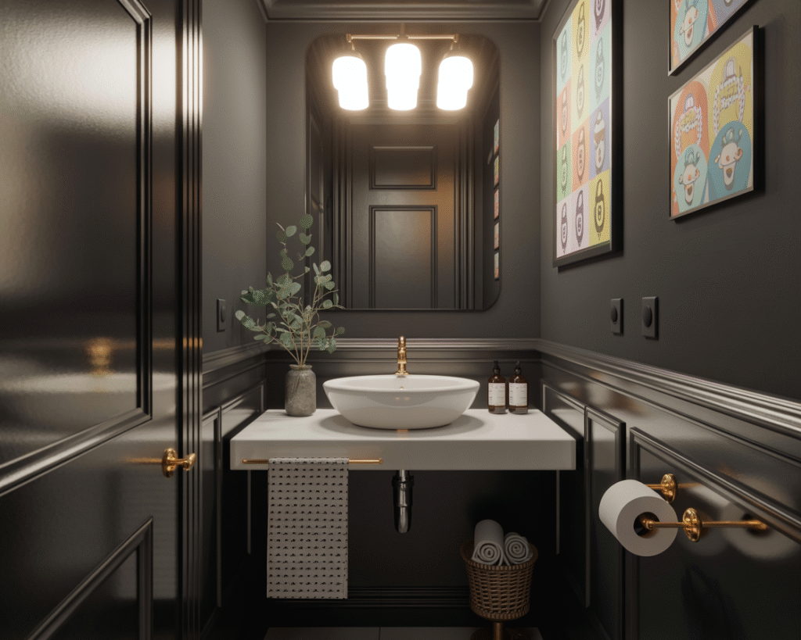
Why Black Works in a Small Room
A dark color in a small space sounds counterintuitive. In practice, it often works better than a light one.
Black removes the visual edges of a room instead of highlighting them.
Without clear boundaries to measure against, the brain stops registering the room as small and starts registering it as intentional.
That's part of why black powder rooms tend to photograph and feel more dramatic than their actual square footage.
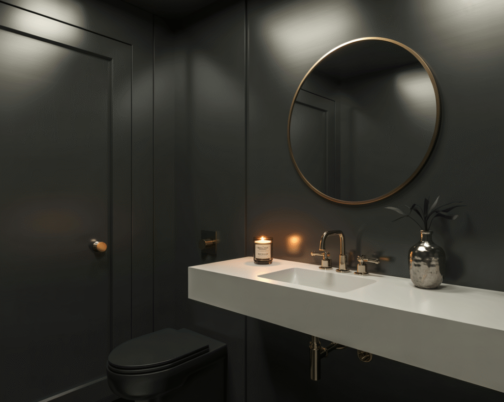
1. Add a Pop of Color
Black doesn't have to stay neutral from floor to ceiling.
One colorful accent, a vase, a towel, a single tile detail, stands out more against black than it would against any lighter backdrop.
This suits anyone who wants the drama of black without losing a personal touch.
Keeping the pop of color to one element is what keeps it reading as a deliberate accent, not a clash.
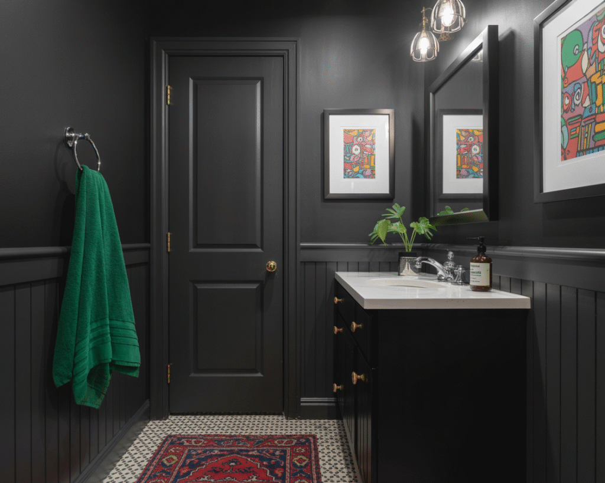
2. Go Fully Committed and All-Black
Walls, vanity, fixtures, and trim all in the same black create a genuinely dramatic, enveloping effect.
This isn't a look for anyone who wants an easy resale pitch. It's for someone who wants the room to make a real statement.
A single light source becomes essential here, since there's no lighter surface left to bounce light around.
Done well, it feels less like a small room and more like a deliberately designed space.
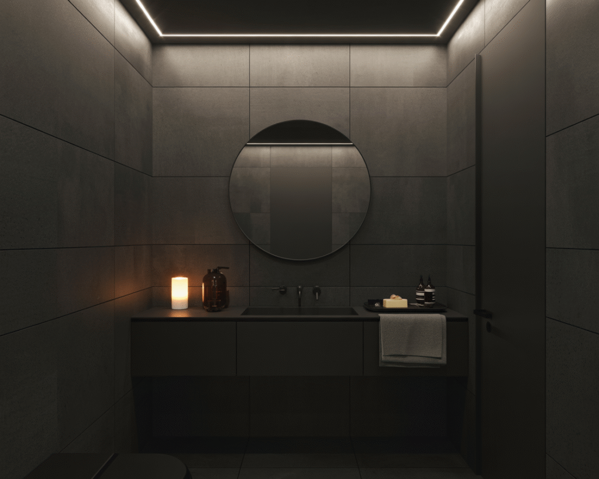
3. Add Texture to the Walls
A flat black paint can read as one solid block of color from across a small room.
Texture, venetian plaster, a subtle grasscloth, or a tactile wallpaper, breaks that up without adding another color.
Texture catches light differently depending on the angle, which keeps a single-color room from feeling static.
This is one of the more subtle ways to add interest to an all-black room.
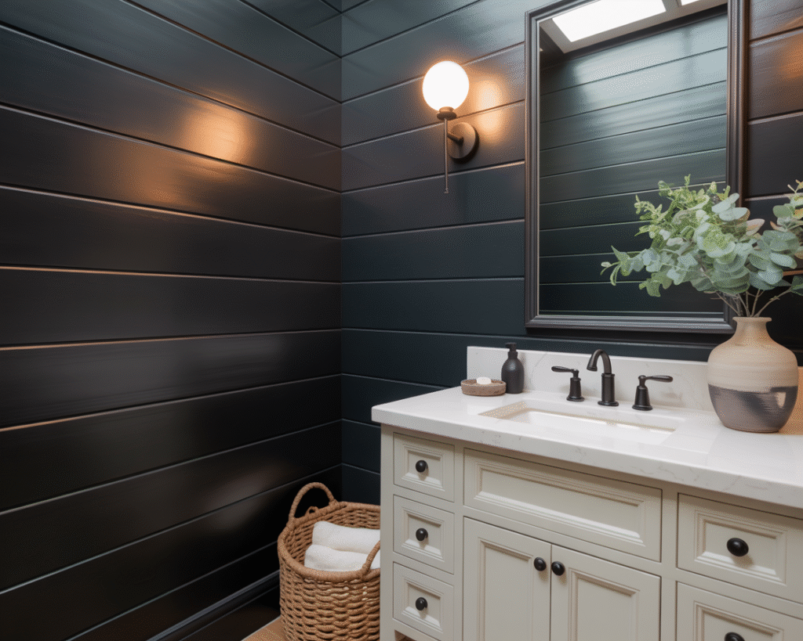
4. Use Black as a Backdrop for Art
A black wall is one of the best backgrounds a piece of art can get.
Colors pop harder against black than against almost any lighter wall color.
This suits anyone who wants the art, not the wall itself, to be the room's main statement.
One well-placed piece against a black wall usually outperforms a full gallery arrangement.
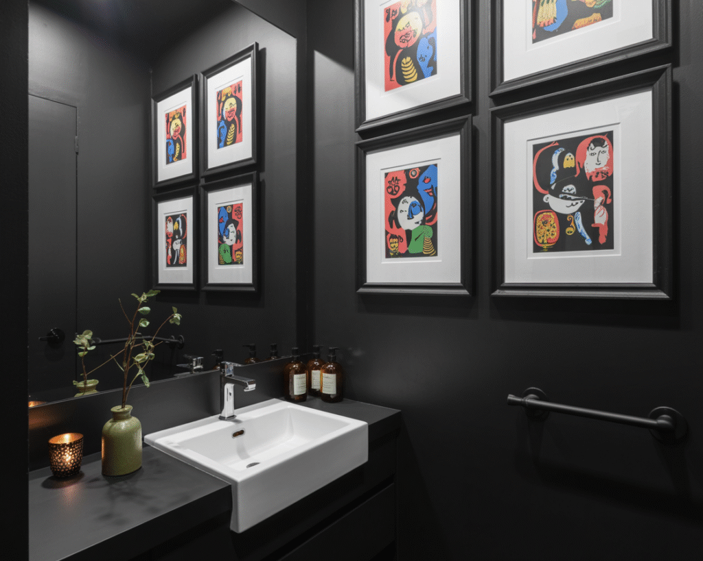
5. Lean Industrial
Black metal fixtures, exposed piping, or a raw concrete floor all lean into an industrial take on the color.
This suits a converted space, a loft-style home, or anyone who wants the room to feel a little more rugged than polished.
Black here does double duty. It's both the color scheme and a practical finish that hides wear well.
This version of black reads as functional first, decorative second.
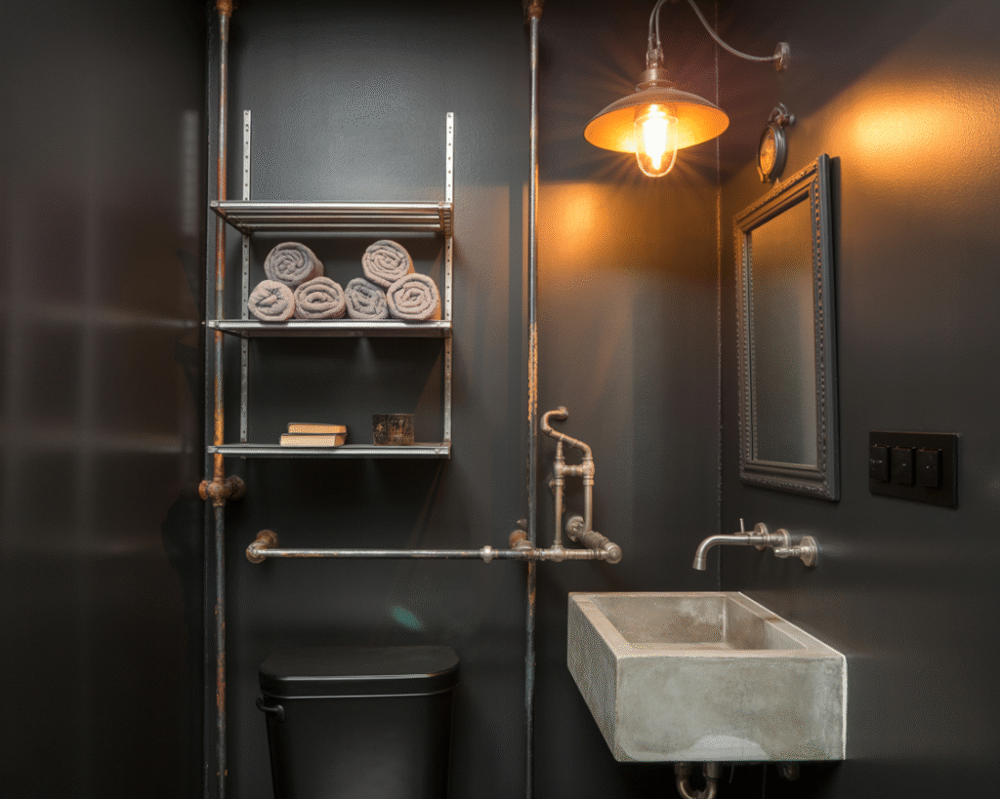
6. Pair Black With Stone or Marble
A black vanity or black-veined marble countertop brings texture into an otherwise flat color scheme.
Natural stone catches light in a way painted surfaces can't, adding subtle variation across the room.
This pairing reads as higher-end than paint alone, even on a modest budget.
It's a natural fit if you're leaning toward stone and marble elsewhere too, applied specifically through a black lens.
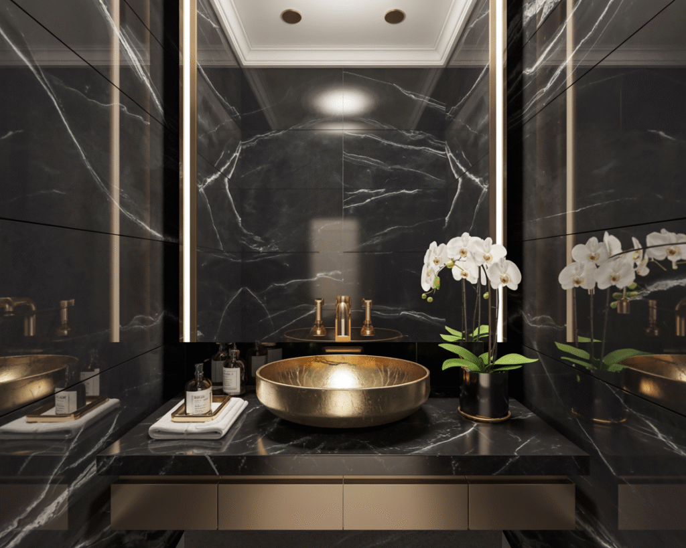
7. Go Bold With Lighting
Lighting carries more weight in a black room than in almost any other color scheme.
A statement chandelier or sculptural sconce becomes the room's clear focal point against a dark backdrop.
Warm bulbs matter here more than anywhere else. A cool white light against black walls can feel clinical fast.
Getting the lighting right is what separates a black room that feels intentional from one that just feels dim.
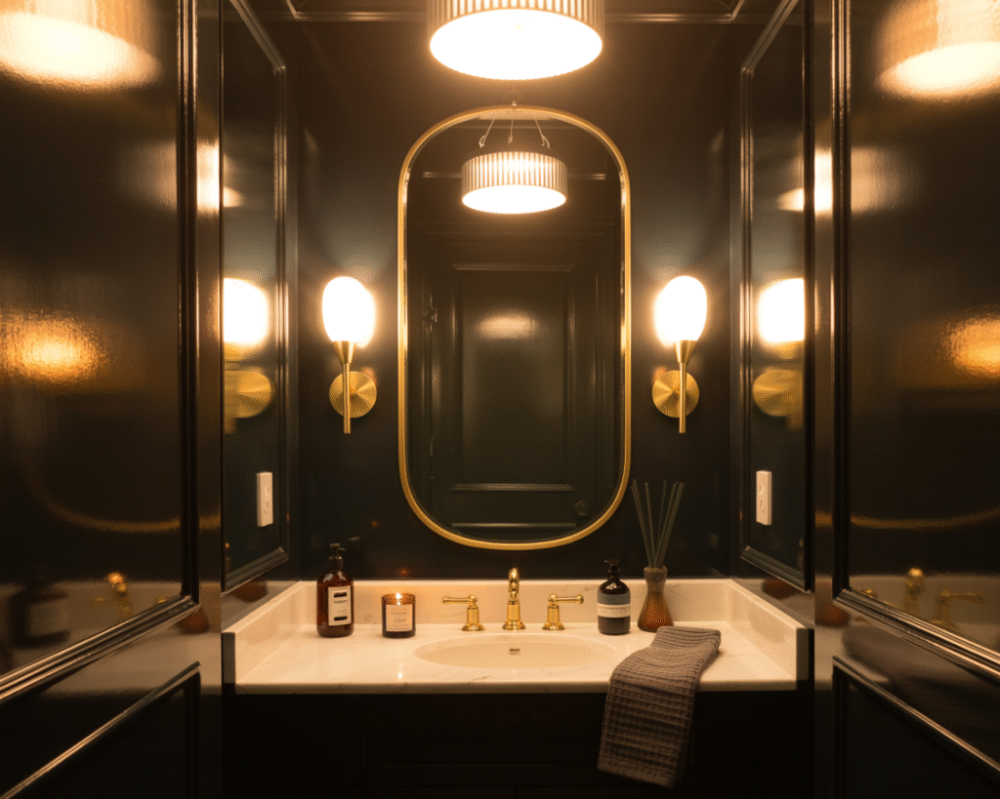
8. Add a Glamorous Mirror
A statement mirror does even more work in a black room than it does in a lighter one.
An oversized or ornately framed mirror reflects light back into a dark space, keeping it from feeling closed in.
Gold or brass framing against black walls leans the whole room toward glamorous rather than simply dark.
This idea pairs naturally with a metallic-accent approach elsewhere in the room.
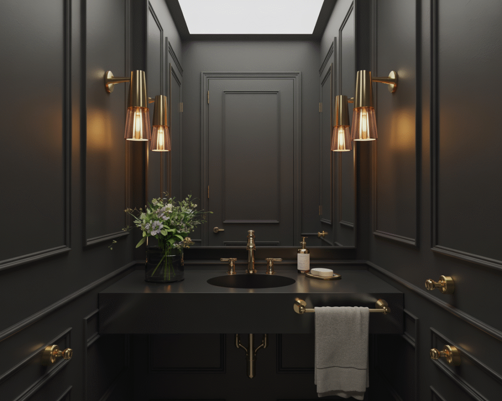
9. Pair Black With Warm Wood
Wood is the material that keeps a black room from feeling cold.
A wood vanity, a wood-framed mirror, or simple wood shelving all bring warmth back into the space.
The contrast between matte black and natural wood grain is a pairing that rarely goes out of style.
This combination suits a room that wants drama without losing a sense of warmth.
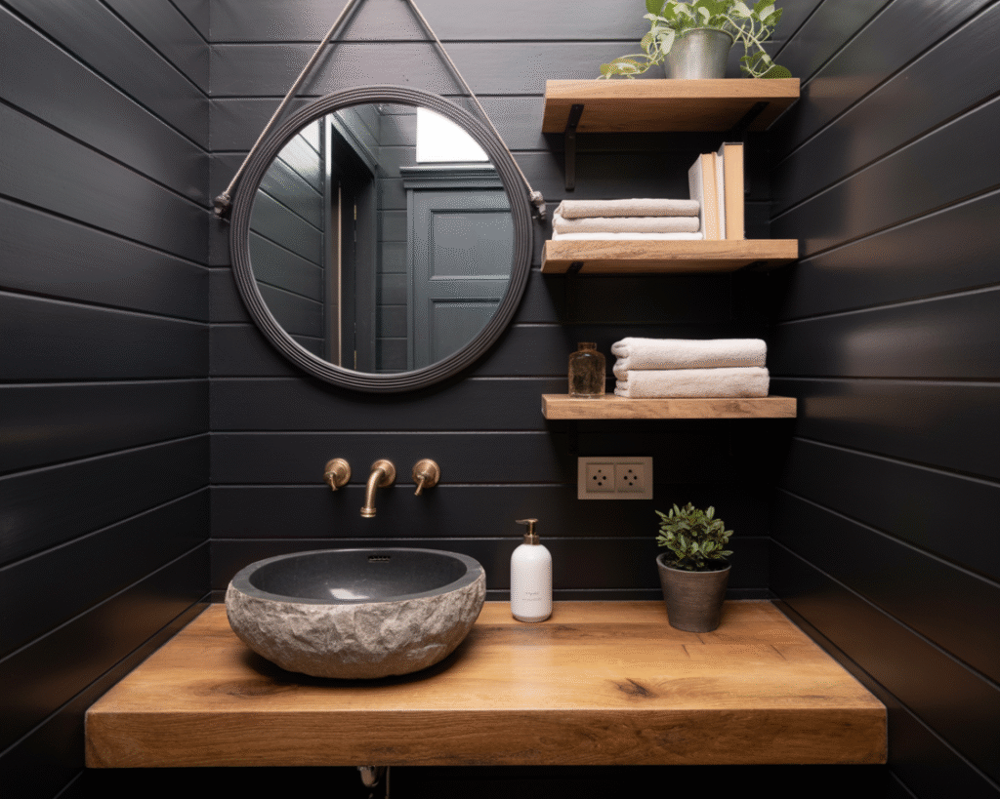
10. Go Sharp With Black-and-White Contrast
Pairing black with crisp white keeps the room from feeling like a single dark block.
A white sink or vanity against black walls creates an immediate, graphic focal point.
This combination reads as modern and clean rather than moody, which suits a different mood than an all-black room.
It's also one of the easier black powder room looks to execute without feeling like a big commitment.
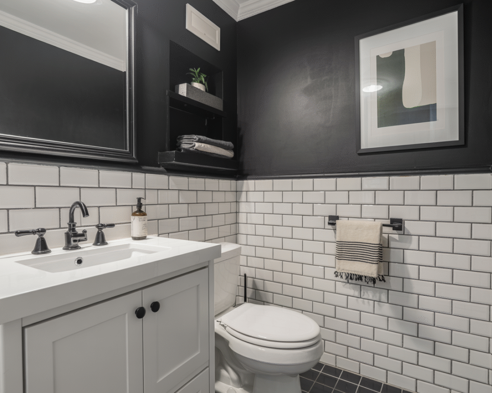
11. Try Black Patterned Wallpaper
A patterned black wallpaper adds depth that a flat painted wall can't quite match.
Botanical prints, geometric patterns, or a subtle damask all read as intentional rather than overwhelming, even in black.
This works especially well if you want drama without committing to a fully monochrome room.
The pattern itself becomes the room's main visual interest, so everything else can stay simple.
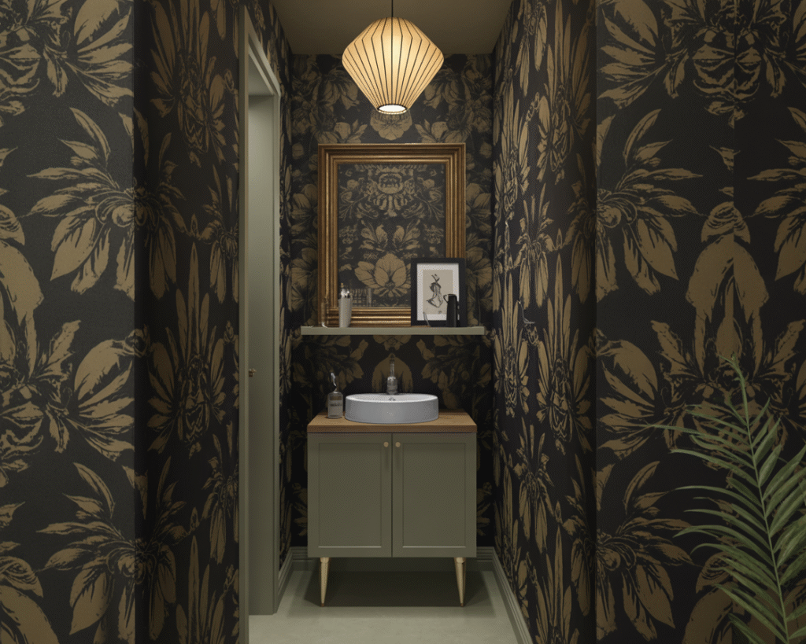
12. Go Matte With Metallic Accents
A matte black wall absorbs light instead of bouncing it, which gives the room a deep, almost velvet quality.
Brass, gold, or warm bronze hardware against that matte backdrop keeps the room from feeling flat or heavy.
This pairing is one of the most reliable ways to execute black without it reading as cold.
The contrast between the dull wall finish and the reflective metal does most of the visual work.
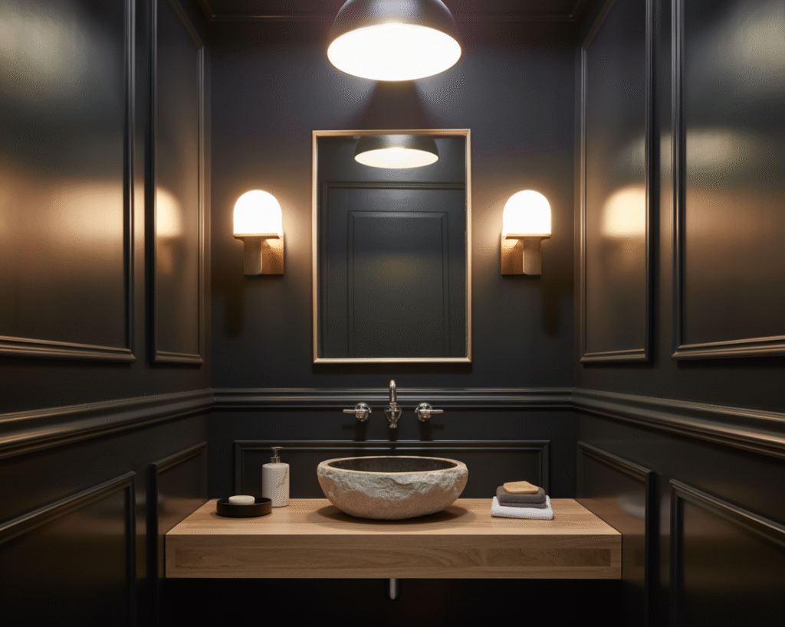
Pick One Pairing and Build From There
Black isn't a single look. It changes completely depending on sheen, pairing, and lighting.
Matte versus gloss, warm wood versus cool metal, full commitment versus one black wall, each choice sends the room in a different direction.
A powder room is a genuinely low-risk place to try it, since the commitment is small and the payoff is immediate.
Start with just one material pairing from this list, and build the rest of the room around it from there.